|
4-3-3
|
Brazil | 3 | - | 0 | Haiti |
5-4-1
|
| HT 3-0 | ||||||
|
FIFA World CupSaturday 20 June 2026
|
||||||
- Venue
- Philadelphia Stadium
- Attendance
- 68,324
- Referee
- Alejandro José Hernández Hernández
Goal23'
Matheus Cunha
Goal36'
Matheus Cunha
Assist: Vinícius Júnior
Substitution40'
Raphinha
Rayan
Goal45+3'
Vinícius Júnior
Assist: Lucas Paquetá
- 2
Substitution64'
Lucas Paquetá
Gabriel Martinelli
Matheus Cunha
Endrick
Yellow card65'
Douglas Santos
- 2
Substitution81'
Vinícius Júnior
Danilo Santos
Bruno Guimarães
Éderson Silva
Whistle45+7'
45+7'
Yellow card4'
C. Arcus
Yellow card45+4'
F. Pierrot
- 2
Substitution46'
C. Arcus
D. Simon
F. Pierrot
W. Isidor
Substitution62'
J. Casimir
L. Deedson
Substitution71'
R. Providence
L. Joseph
Yellow card72'
D. Jean Jacques
Substitution81'
J. Bellegarde
D. Etienne
Brazil | |
|---|---|
Goalkeeper | |
| 1 | Alisson Becker |
Defender | |
| 3 | Gabriel Magalhães |
| 4 | Marquinhos |
| 13 | Danilo |
| 16 | Douglas Santos 65' |
Midfielder | |
| 5 | Casemiro |
| 8 | Bruno Guimarães 81' |
| 20 | Lucas Paquetá 64' |
Forward | |
| 7 | Vinícius Júnior 45+3'81' |
| 9 | Matheus Cunha 23'36'64' |
| 11 | Raphinha 40' |
Substitutes | |
| 2 | Éderson Silva 81' |
| 18 | Danilo Santos 81' |
| 19 | Endrick 64' |
| 22 | Gabriel Martinelli 64' |
| 26 | Rayan 40' |
Haiti | |
Goalkeeper | |
| 1 | J. Placide |
Defender | |
| 2 | C. Arcus 4'46' |
| 4 | R. Adé |
| 5 | H. Delcroix |
| 8 | M. Expérience |
| 22 | J. Duverne |
Midfielder | |
| 10 | J. Bellegarde 81' |
| 15 | R. Providence 71' |
| 17 | D. Jean Jacques 72' |
| 21 | J. Casimir 62' |
Forward | |
| 20 | F. Pierrot 45+4'46' |
Substitutes | |
| 7 | D. Etienne 81' |
| 11 | L. Deedson 62' |
| 16 | L. Joseph 71' |
| 18 | W. Isidor 46' |
| 25 | D. Simon 46' |


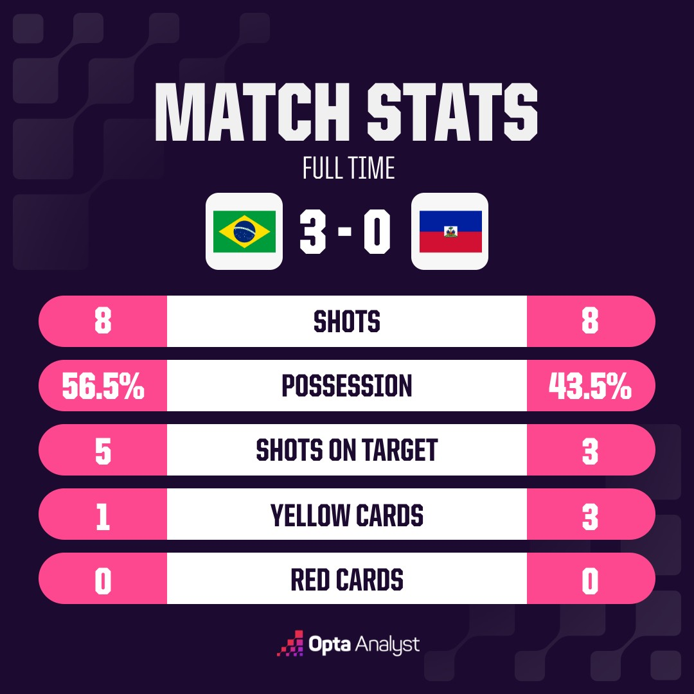
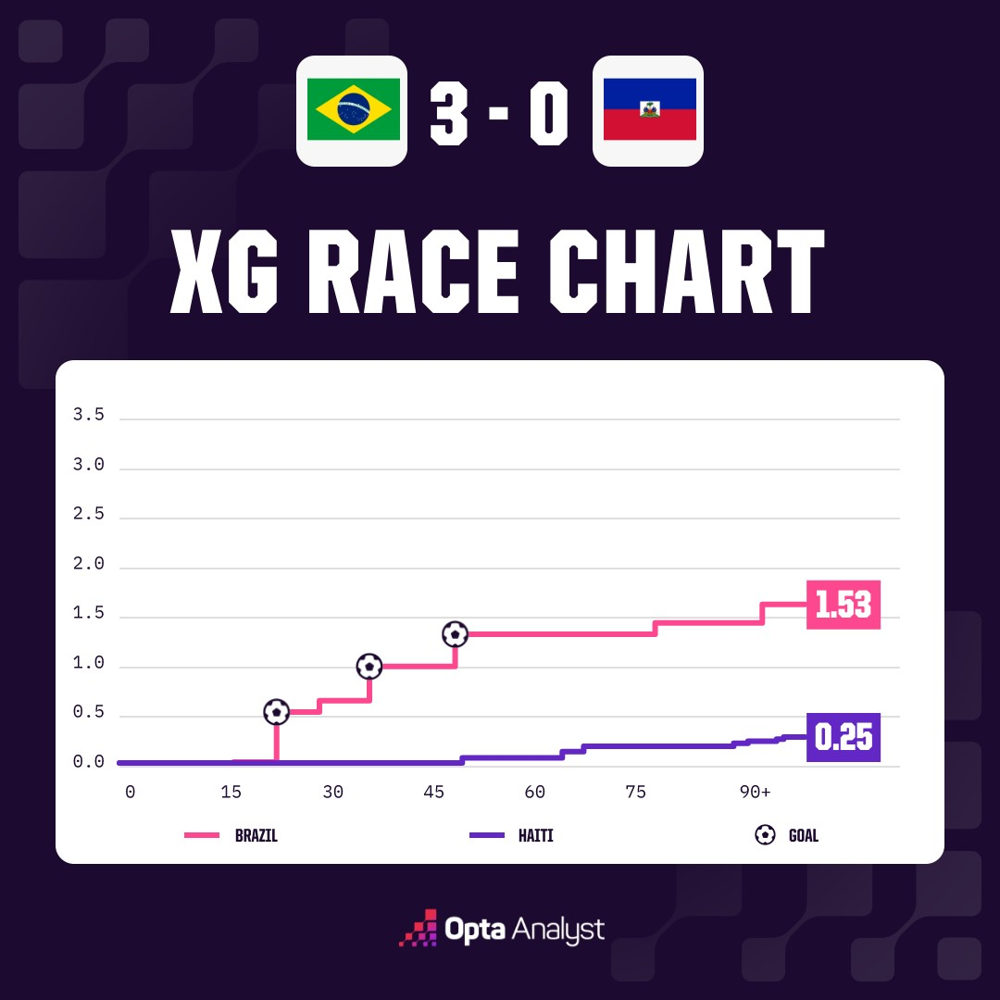
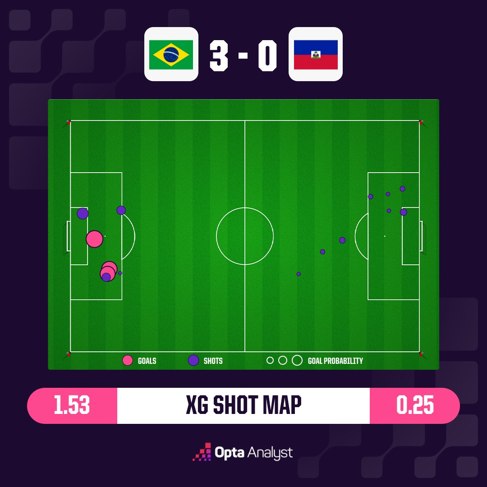
90+6'
Brazil WIN! It’s all over at Philadelphia Stadium, with Brazil coming out on top 3-0 over Haiti, thanks to goals from Vinícius Júnior and Matheus Cunha.
90+6'
It's all hands on deck for Brazil as they defend their lead, making a wave of critical blocks and clearances
90+5'
Good play from Martin Expérience, who draws a foul from Rayan to hand Haiti a free-kick in a dangerous position. Will they create something from this set-piece?
90+4'
No luck – it’s offside! Jean Duverne looked to dart in behind and get on the end of a pass, yet they just went too early, and the flag is up to signal offside.
90+3'
Brazil have a corner to defend now after Alisson Becker diverts an attempt from Dominique Simon out of play. Can Haiti take this chance to get a good delivery in and really test their opponent’s defence?
90+2'
This could be a chance for Brazil, after Ricardo Adé fouls Rayan, handing them a free-kick in a threatening area. A good set-piece from here could really test the Haiti defense!
90+1'
What a chance! That should really have been another goal for Brazil, who would have extended their lead had Éderson Silva kept their composure, but instead Haiti survive that opportunity. Can they make their luck count?
90+1'
No luck – it’s offside! Louicius Deedson looked to dart in behind and get on the end of a pass, yet they just went too early, and the flag is up to signal offside.
89'
MISS! The score remains 0-3, with Brazil relieved after Haiti’s Ricardo Adé goes for goal but sends their attempt off target. Not one to write home about, that one.
88'
It's all hands on deck for Brazil as they defend their lead, making a wave of critical blocks and clearances
87'
Corner now for Haiti, as they see a shot from Wilson Isidor deflected out of play for a set-piece. Brazil have some defending to do, here. Could this result in a big opportunity?
87'
A free-kick to Brazil, as Martin Expérience goes in and fouls Rayan. However, Haiti will not mind giving one away in this area too much, with plenty of distance to their goal.
86'
Neither team has had a shot in the past 10 minutes, as this match just enters something of a down period. Haiti have seen more of the ball, with 58 per cent possession, but Brazil are keeping them away from goal. There is still a chance the match will spark into life, though.
86'
A free-kick to Brazil, as Jean Duverne goes in and fouls Gabriel Martinelli. However, Haiti will not mind giving one away in this area too much, with plenty of distance to their goal.
84'
Martin Expérience goes in on Casemiro and concedes a foul. The free-kick is not in a particularly dangerous area from Haiti’s viewpoint, though.
82'
A free-kick to Haiti, as Éderson Silva goes in and fouls Ricardo Adé. However, Brazil will not mind giving one away in this area too much, with plenty of distance to their goal.
81'
A substitution for Haiti sees Jean Bellegarde replaced by Derrick Etienne. There does not appear to be any obvious sign of an injury, so that is a tactical switch.
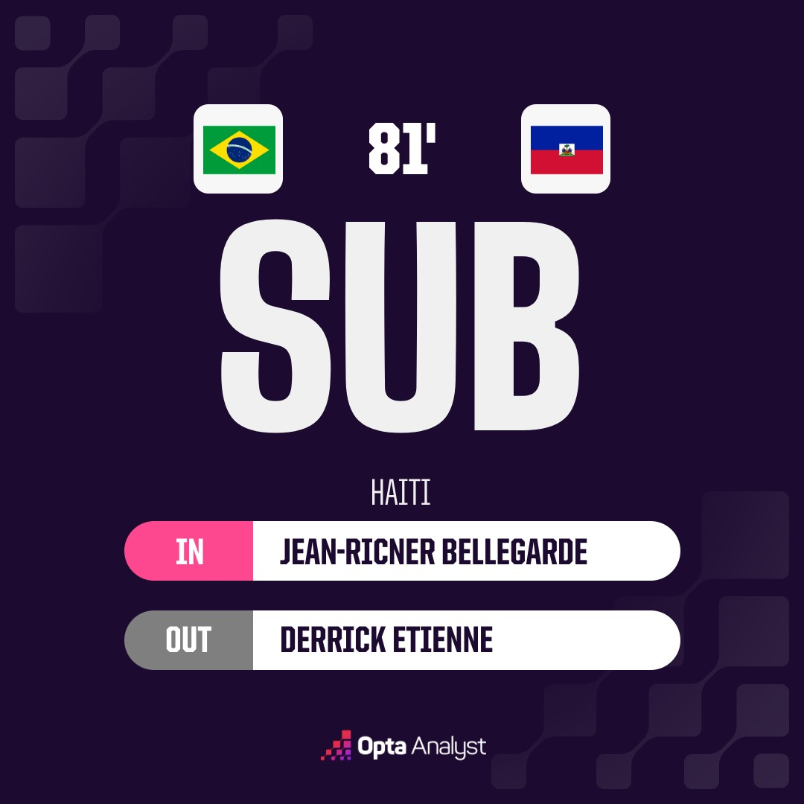
81'
A substitution for Brazil sees Bruno Guimarães replaced by Éderson Silva. There does not appear to be any obvious sign of an injury, so that is a tactical switch.
81'
The Brazil manager is looking to the substitutes’ bench, bringing on Danilo Santos in place of Vinícius Júnior. Will the change make a difference? Let’s find out!
79'
A foul from Ricardo Adé on Vinícius Júnior sees Brazil win a free-kick, but it is not in a dangerous position, so Haiti should be confident they can defend it easily enough.
78'
That’s offside! A switched-on defensive line from Haiti, as they step up at the right time to catch Endrick offside, and the assistant referee’s flag is up.
77'
A foul from Martin Expérience on Casemiro sees Brazil win a free-kick, but it is not in a dangerous position, so Haiti should be confident they can defend it easily enough.
76'
Oh no! That should have been in! Douglas Santos was through but could not keep their composure when it mattered most. Brazil still lead, but they have not been able to extend it. Will that be the good fortune Haiti need?
76'
No goalmouth action for some time now, with neither team having had a shot in the past 10 minutes. Will there be a moment that changes things soon? Brazil have seen plenty of the ball, however, with 64 per cent of the possession in their favour during that period.
76'
Entering the final stages of this contest, let’s check on the possession stats for each team. It is Brazil who have had the more of the ball, with 59.24%, while Haiti have had to settle for 40.76%. The score is 3-0.
75'
A free-kick to Brazil, as Lenny Joseph goes in and fouls Bruno Guimarães. However, Haiti will not mind giving one away in this area too much, with plenty of distance to their goal.
74'
This could be a chance for Haiti, after Rayan fouls Jean Bellegarde, handing them a free-kick in a threatening area. A good set-piece from here could really test the Brazil defense!
73'
Free-kick! A foul from Endrick on Hannes Delcroix. It is well away from Brazil’s goal, so it is unlikely to result in a chance for Haiti.
72'
A yellow card for Haiti's Danley Jean Jacques. They will have to walk a tightrope for the rest of this match, and Brazil will likely look to target them and draw a second bookable offence.
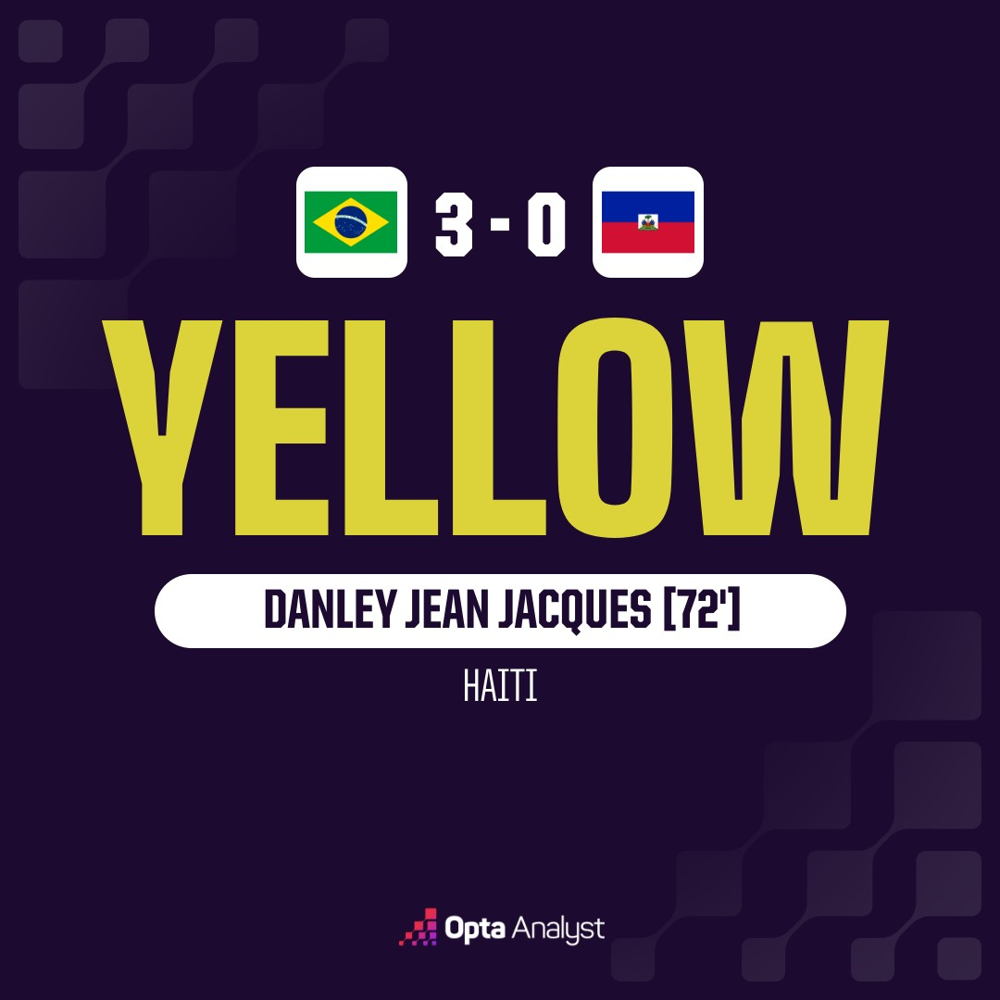
72'
Danley Jean Jacques goes in on Gabriel Martinelli and concedes a foul. The free-kick is not in a particularly dangerous area from Haiti’s viewpoint, though.
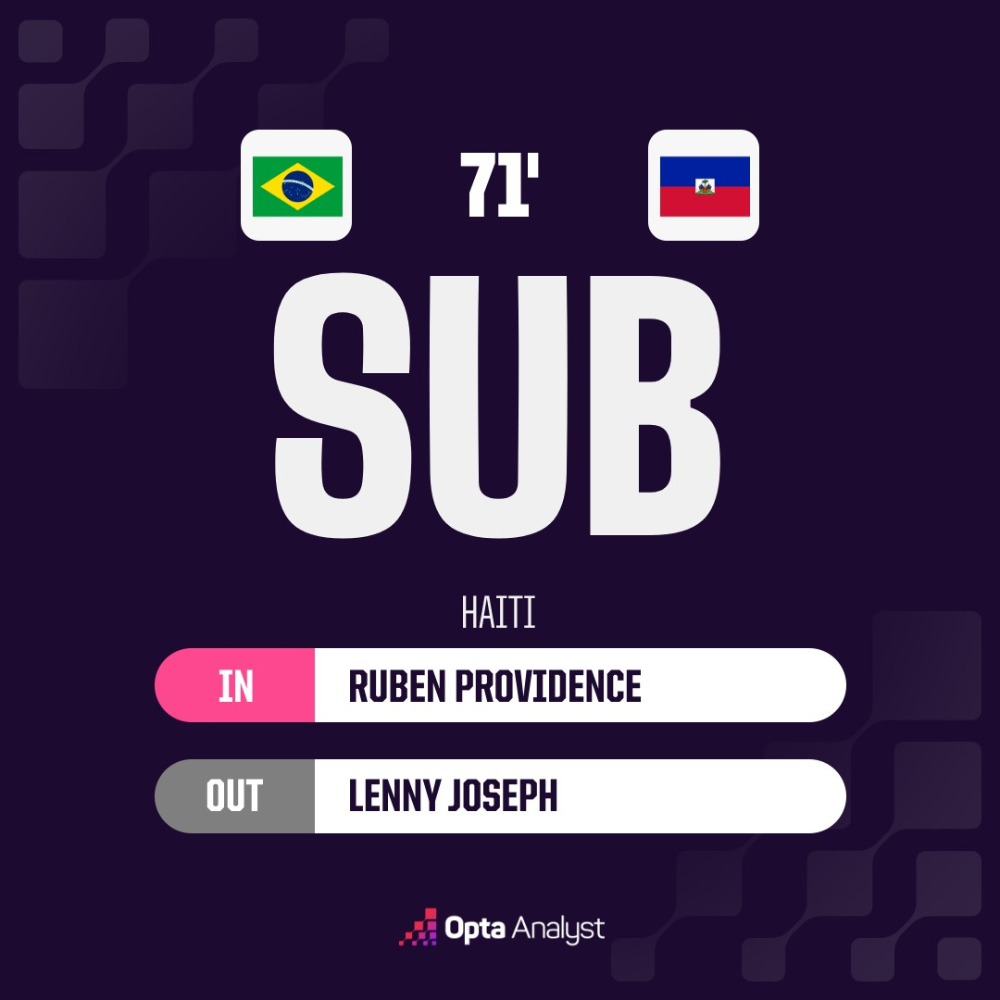
71'
Ruben Providence’s match is over as Haiti decide to make a substitution. Lenny Joseph enters the field in what looks like a tactical change.
68'
Offside! Vinícius Júnior thought they were through on goal, but the Haiti defence stepped up in time to catch them offside, and the assistant referee puts their flag up.
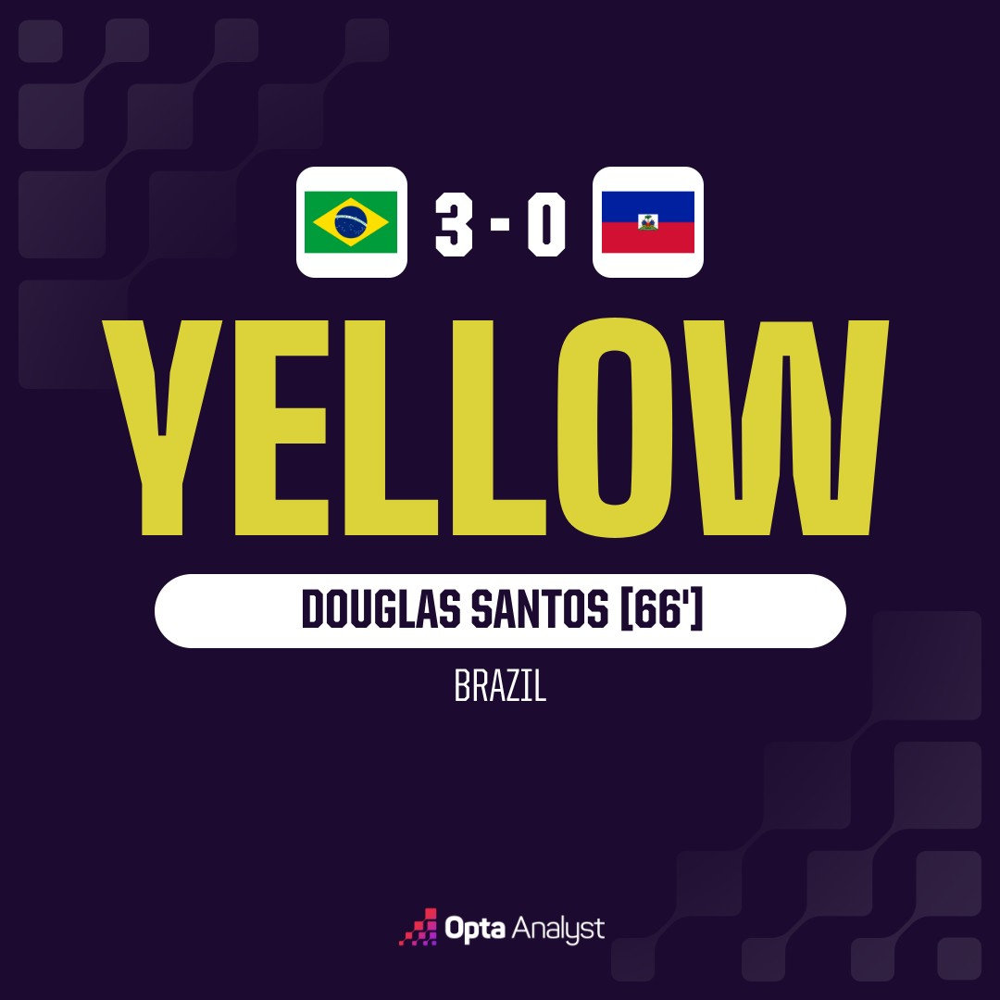
66'
A chance goes begging as Jean Duverne gets off a shot that does not hit the target. They might have done better with that one, but instead it is a goal-kick to Brazil.
66'
A chance goes begging as Ruben Providence gets off a shot that does not hit the target. They might have done better with that one, but instead it is a goal-kick to Brazil.
66'
With 65 minutes gone, it is Haiti who lead the shot count, with 2 to Brazil’s 6. Haiti have got , while Brazil have managed to get 5 on target.
65'
A yellow card for Brazil's Douglas Santos. They will have to walk a tightrope for the rest of this match, and Haiti will likely look to target them and draw a second bookable offence.
65'
This could be a chance for Haiti, after Douglas Santos fouls Wilson Isidor, handing them a free-kick in a threatening area. A good set-piece from here could really test the Brazil defense!
64'
Brazil are making a tactical change. Matheus Cunha is leaving the field and in their place comes Endrick – we will soon see if this switch has the desired impact.
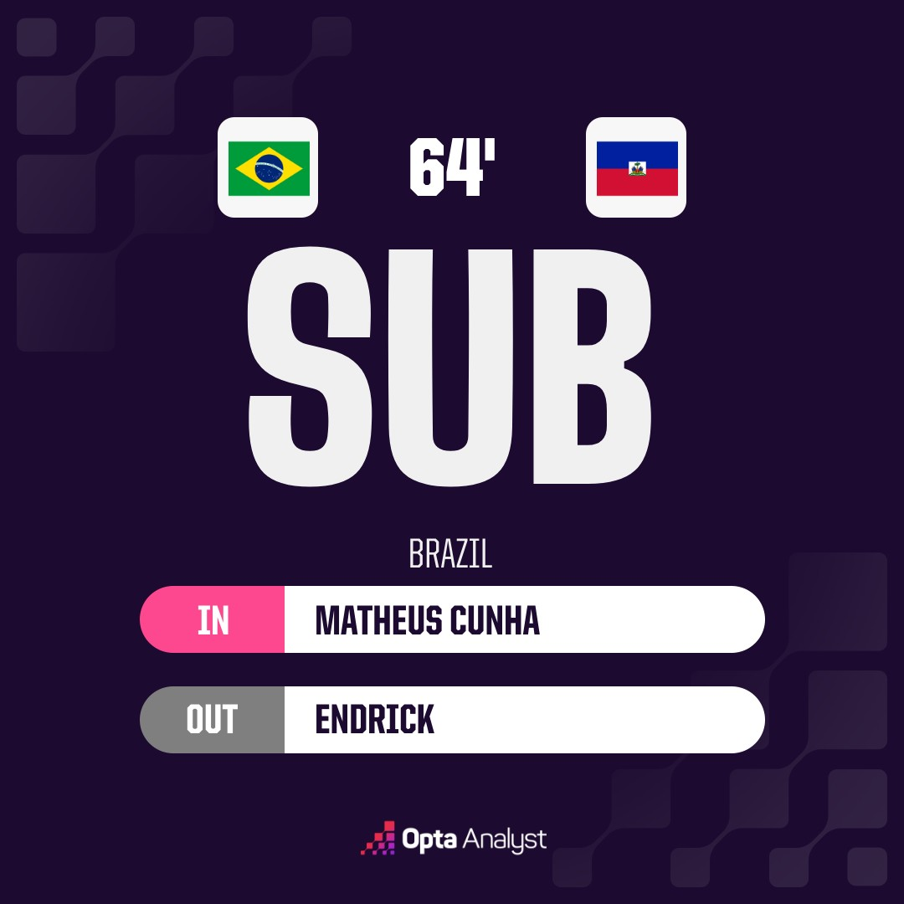
64'
Substitution! Gabriel Martinelli replaces Lucas Paquetá for Brazil as the manager shuffles the pack. Can Gabriel Martinelli make an impression as this match continues?
63'
Save! A big stop from Alisson Becker, who reacts to keep out Ricardo Adé's attempt from inside the area.
63'
Substitution! Louicius Deedson replaces Josué Casimir for Haiti as the manager shuffles the pack. Can Louicius Deedson make an impression as this match continues?
61'
Free-kick! A foul from Danilo on Ruben Providence. It is well away from Brazil’s goal, so it is unlikely to result in a chance for Haiti.
59'
Douglas Santos makes a run in behind but the Haiti defensive line were alert, and stepped up in time to catch them offside. That run just needed to be timed better.
59'
This game is certainly in a bit of a lull now, with neither team having had an attempt at goal in the past 10 minutes. It could do with something to spark it into life. Brazil have had more possession during the quiet spell, but are yet to do much with it.
58'
Textbook game management from Brazil after the break. They're stroking the ball around with confidence, making Haiti work for every touch while protecting that precious lead.
53'
A foul from Douglas Santos on Jean Duverne sees Haiti win a free-kick, but it is not in a dangerous position, so Brazil should be confident they can defend it easily enough.
49'
A foul from Dominique Simon on Bruno Guimarães sees Brazil win a free-kick, but it is not in a dangerous position, so Haiti should be confident they can defend it easily enough.
49'
Shot blocked! Wilson Isidor unleashes an attempt at goal, but the ball does not reach its target thanks to Marquinhos, who makes a solid block to stem the danger – for now.
46'
Substitution! Dominique Simon replaces Carlens Arcus for Haiti as the manager shuffles the pack. Can Dominique Simon make an impression as this match continues?
46'
Haiti are making a tactical change. Frantzdy Pierrot is leaving the field and in their place comes Wilson Isidor – we will soon see if this switch has the desired impact.
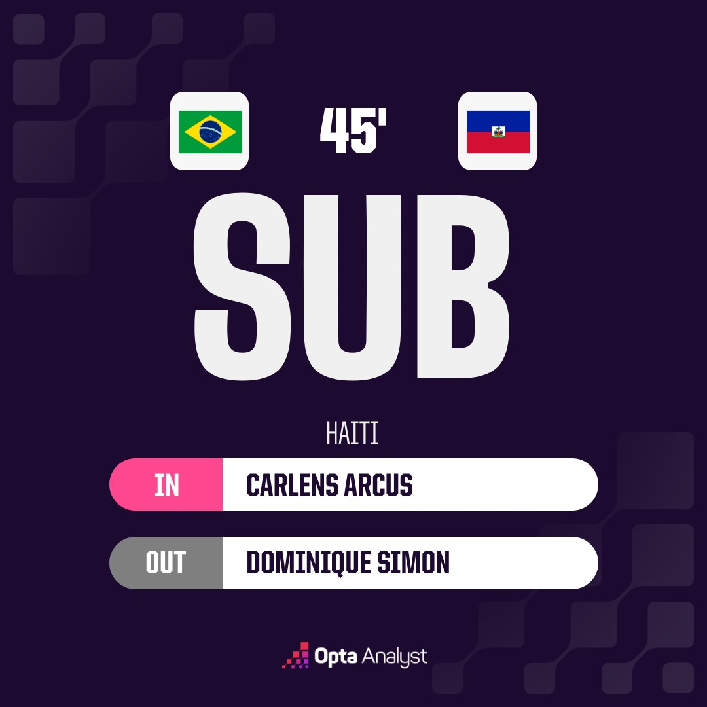
45+7'
Half-time! The referee blows the whistle and it is time for the interval. As we reach the break it is Brazil 3-0 Haiti at Philadelphia Stadium.
45+4'
A yellow card for Haiti's Frantzdy Pierrot. They will have to walk a tightrope for the rest of this match, and Brazil will likely look to target them and draw a second bookable offence.
45+4'
A rash challenge from Frantzdy Pierrot, who sends Gabriel Magalhães tumbling, giving Brazil a free-kick. It is not in a threatening position, but it gives them a chance to get back on the ball.
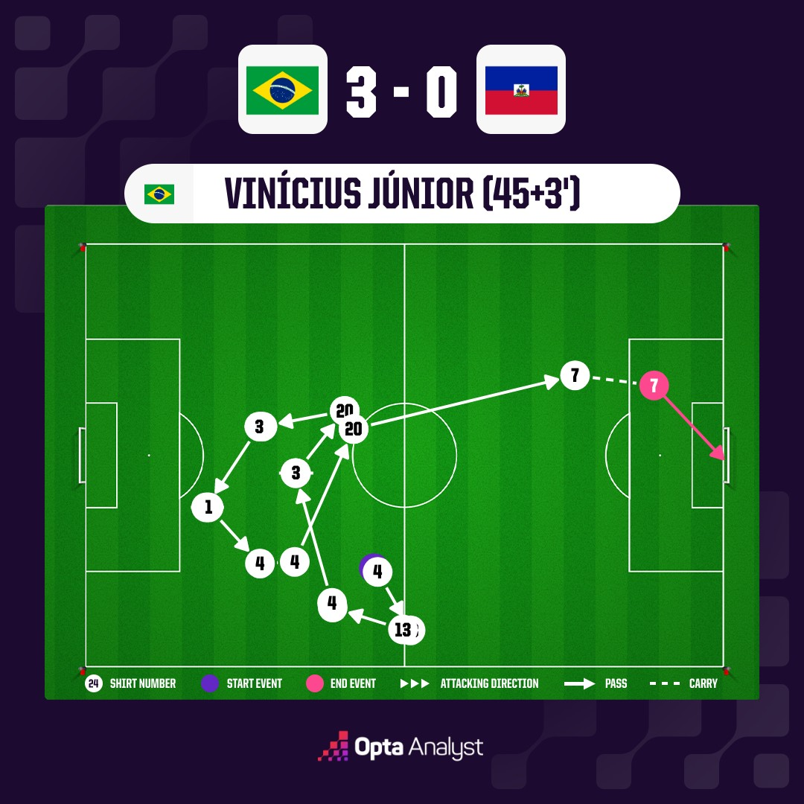
45+3'
GOAL! Vinícius Júnior scores, and Brazil are now well in front – surely they will go on and see this one out now? It seems a long way back for Haiti, with Brazil well in control of this match.
45+2'
A rash challenge from Casemiro, who sends Carlens Arcus tumbling, giving Haiti a free-kick. It is not in a threatening position, but it gives them a chance to get back on the ball.
45+1'
This game is certainly in a bit of a lull now, with neither team having had an attempt at goal in the past 10 minutes. It could do with something to spark it into life. Brazil have had more possession during the quiet spell, but are yet to do much with it.
44'
Brazil looking confident now - a composed spell of possession as they stroke the ball around and head toward the break in control.
41'
A foul from Casemiro on Frantzdy Pierrot sees Haiti win a free-kick, but it is not in a dangerous position, so Brazil should be confident they can defend it easily enough.
40'
That is bad news for Brazil, as they suffer an injury blow, with Raphinha having had to receive treatment before then making their way off the pitch. Rayan is coming on.
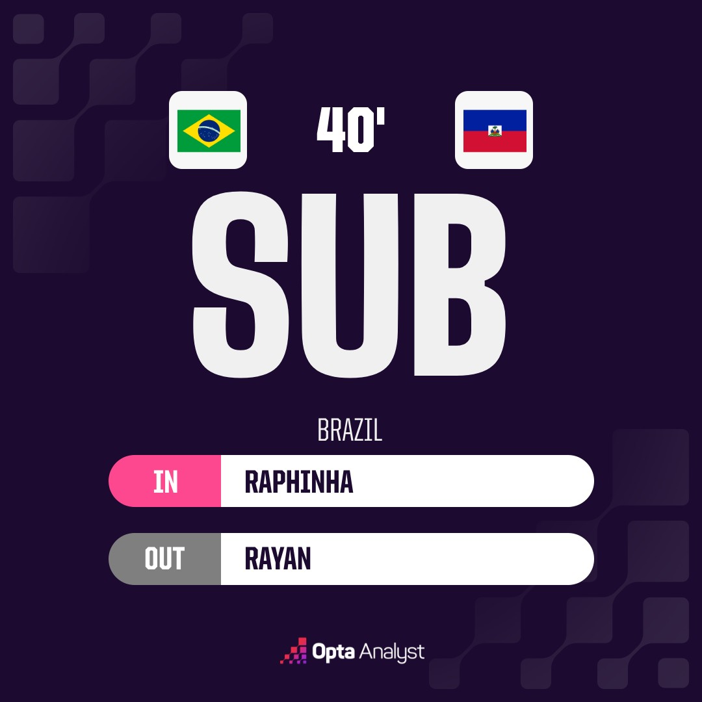
39'
A rash challenge from Carlens Arcus, who sends Matheus Cunha tumbling, giving Brazil a free-kick. It is not in a threatening position, but it gives them a chance to get back on the ball.
38'
Offside! Carlens Arcus thought they were through on goal, but the Brazil defence stepped up in time to catch them offside, and the assistant referee puts their flag up.
36'
Is that game over? Brazil are now well ahead, having extended their lead to 2 goals thanks to Matheus Cunha’s effort. It’s now 2-0, and Haiti face an uphill battle to get back into it.
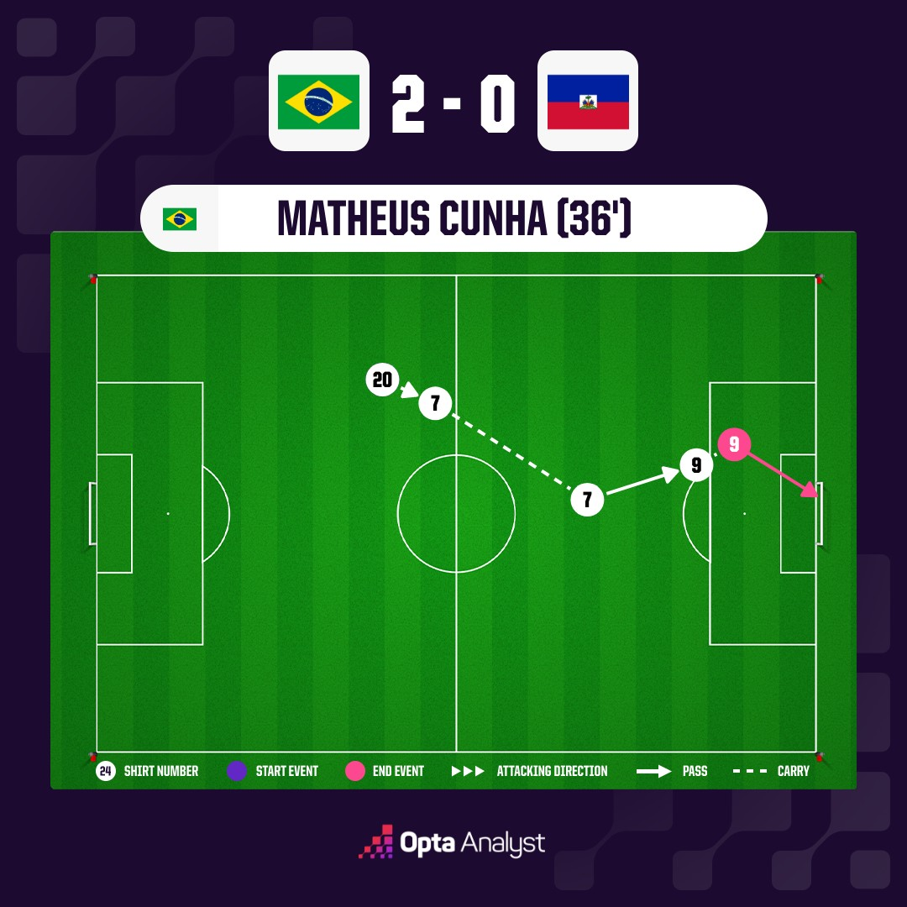
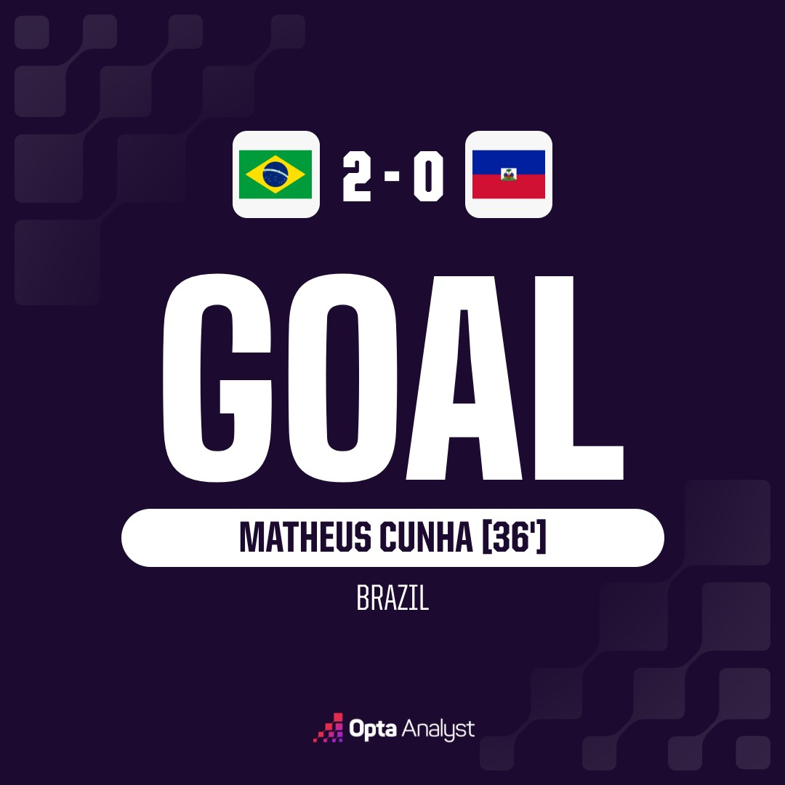
35'
Excellent defensive work from Brazil; their organization and success in key duels are effectively safeguarding their lead.
34'
A chance now for Haiti to get a good delivery into the box, after the ball is diverted behind for a corner. Haiti have been pushing for what would be a key goal, but Brazil have stood firm so far.
31'
A rash challenge from Raphinha, who sends Martin Expérience tumbling, giving Haiti a free-kick. It is not in a threatening position, but it gives them a chance to get back on the ball.
31'
Vinícius Júnior makes a run in behind but the Haiti defensive line were alert, and stepped up in time to catch them offside. That run just needed to be timed better.
29'
SHOT! Raphinha manages to get a shot off from inside the area, but although it was heading in, they cannot get enough on it to beat Johny Placide, who makes the save.
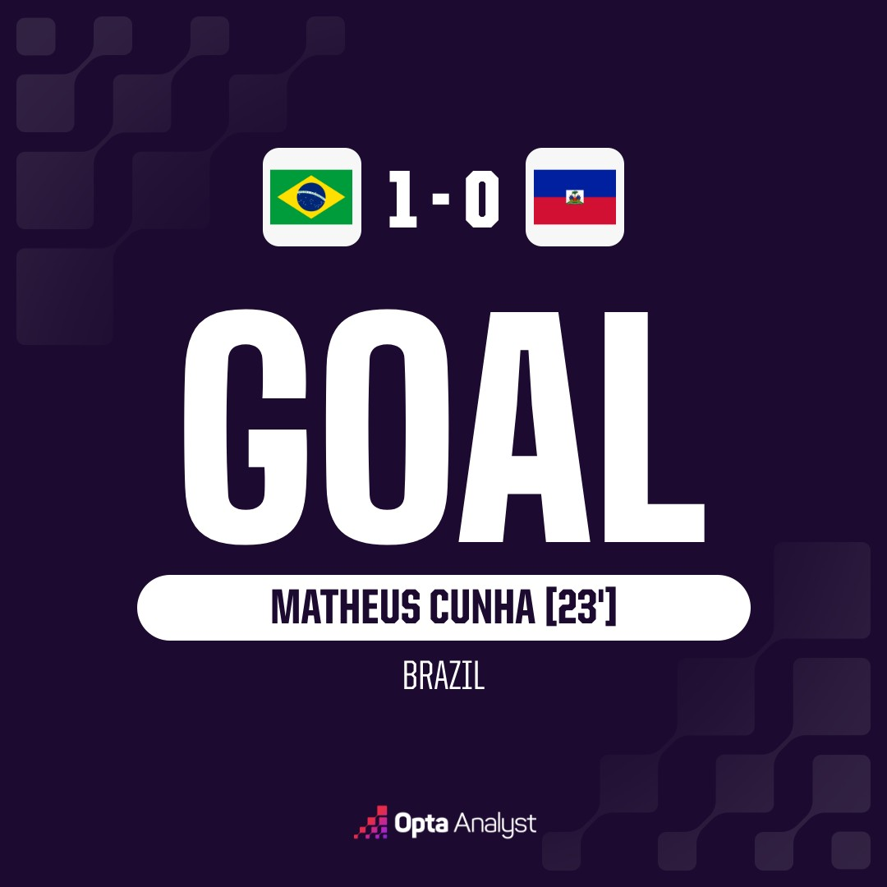
23'
GOAL! Brazil are in the lead! Matheus Cunha scores from inside the box to give his side the advantage in this match. Can Haiti find a way back into this, or will Brazil go on and win it now?
23'
SAVED! Good work from Johny Placide, who stands firm to deny Vinícius Júnior, who managed to get a shot away from inside the Haiti area.
22'
The Haiti defence steps up in time and there is a frustration for Raphinha, who thought they were through until the flag goes up to signal offside.
21'
Corner! Brazil are pushing for a goal and now they have an opportunity from this set-piece.
19'
The Brazil defence steps up in time and there is a frustration for Carlens Arcus, who thought they were through until the flag goes up to signal offside.
17'
Shot blocked! Vinícius Júnior unleashes an attempt at goal, but the ball does not reach its target thanks to Josué Casimir, who makes a solid block to stem the danger – for now.
17'
In the last 15 minutes, it is Brazil who have dominated the ball, having seen 68.39% of the possession, yet they have not been able to go and turn that into a goal just yet, with their opponents standing firm.
17'
It is a corner now to Brazil, with Haiti somewhat hanging on here as they look to hold out for a positive result. Can Brazil make something of this set-piece opportunity?
16'
Plenty of the ball in the last quarter-of-an-hour of this match for Brazil, but Haiti have been able to hold them off with ease, with Brazil having failed to even muster a shot at goal.
14'
A free-kick to Haiti, as Danilo goes in and fouls Ruben Providence. However, Brazil will not mind giving one away in this area too much, with plenty of distance to their goal.
14'
It’s been tight so far, and Haiti are making sure it stays that way with strong defensive discipline and well-timed clearances.
13'
Offside! Danilo thought they were through on goal, but the Haiti defence stepped up in time to catch them offside, and the assistant referee puts their flag up.
12'
The Haiti defence steps up in time and there is a frustration for Raphinha, who thought they were through until the flag goes up to signal offside.
11'
Josué Casimir goes in on Gabriel Magalhães and concedes a foul. The free-kick is not in a particularly dangerous area from Haiti’s viewpoint, though.
11'
Neither team has had a shot in the past 10 minutes, as this match just enters something of a down period. Brazil have seen more of the ball, with 60 per cent possession, but Haiti are keeping them away from goal. There is still a chance the match will spark into life, though.
9'
A free-kick to Haiti, as Lucas Paquetá goes in and fouls Frantzdy Pierrot. However, Brazil will not mind giving one away in this area too much, with plenty of distance to their goal.
4'
Matheus Cunha makes a run in behind but the Haiti defensive line were alert, and stepped up in time to catch them offside. That run just needed to be timed better.
4'
That is a booking for Carlens Arcus, who has received their first yellow card. They are not happy with the decision, but it is done now, and they will have to be careful for the rest of this game.
4'
Free-kick! A foul from Carlens Arcus on Douglas Santos. It is well away from Haiti’s goal, so it is unlikely to result in a chance for Brazil.
2'
A rash challenge from Bruno Guimarães, who sends Martin Expérience tumbling, giving Haiti a free-kick. It is not in a threatening position, but it gives them a chance to get back on the ball.
1'
We are under way as Brazil kick off at Philadelphia Stadium. Let's hope an entertaining contest is in store.
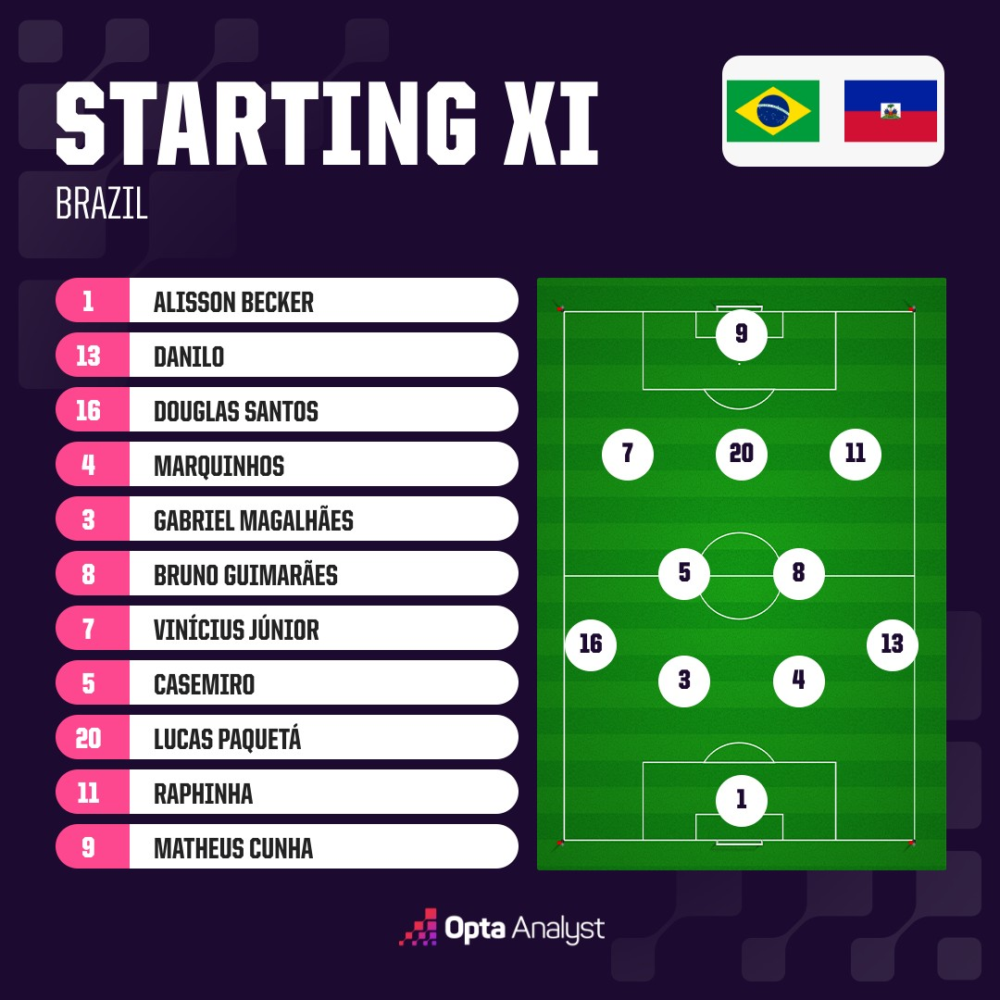
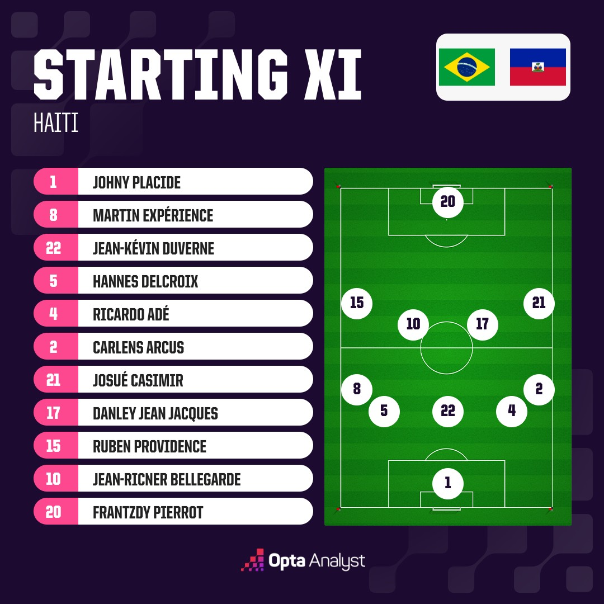
There have been 3 or more goals scored in total in each of Haiti's last 4 away games
Brazil face Haiti on Friday at Philadelphia Stadium in a clash of teams who have yet to earn a win early in the FIFA World Cup group stage.
Brazil played out a 1-1 draw in their opening World Cup group stage match against Morocco on June 13. Vinícius Júnior scored in the draw. They are undefeated in their last four games in all competitions. In five games this year, they have three wins, one draw, and one loss.
Haiti slumped 1-0 against Scotland in their opening World Cup group stage game, a June 13 clash at Boston Stadium. In 2026, they have won one, drawn one, and lost three.
Brazil are third in the group on one point, while Haiti's zero points place them fourth. With three points, Scotland are sitting atop the group. Morocco are second on one point.
The previous fixture between the teams saw Brazil win 7-1 in a CONMEBOL Copa America Group Stage match at Camping World Stadium in June 2016. Philippe Coutinho led the Brazilian side with goals in the 14th, 29th, and 92nd minute. Renato Augusto also found the net twice. James Marcelin scored Haiti's only goal in the 70th minute.
Júnior leads Brazil in World Cup scoring after netting against Morocco. Haiti are still looking for their first goal of this World Cup campaign.
Brazil have scored in nine straight contests in all competitions. They have hit the back of the net in every match since a World Cup Qualifiers meeting with Bolivia in September 2025.
In their last six matches in all competitions, Brazil have won three, drawn two and lost one. The Brazilian side scored 14 and conceded eight over that stretch, scoring first in three of the six contests. They had six first-half goals, while their opponents netted five times in the first 45 minutes. The Haitian side have won two, drawn one and lost three in their last six. The Haitian side scored eight and conceded five over that stretch, netting first in three of the six. They had four goals in the first half, while their opponents netted two times before the break.
-
General
Possession 56.7% 56.67743.32343.3% Possession lost in defensive half 27 273232 Possession lost in middle third 47 474343 Duels 95 959797 Duels success rate 54.7% 54.73743.29943.3% Aerial duels 24 242424 Aerial duels won 58.3% 58.33341.66741.7% Successful dribbles 4 433 Fouls won 14 141313 Offsides 8 844 Corner awarded 4 444 -
Distribution
Passes 525 525399399 Long passes 44 445656 Long passes proportion (%) 8.4% 8.38114.03514.0% Passing accuracy 88.0% 8883.20883.2% Passes in opponents' half 231 231223223 Passing accuracy in opponents' half (%) 79.7% 79.65477.57877.6% Total passes in the final third 106 1069595 Passing accuracy in final third (%) 67.0% 66.98164.21164.2% Forward passes 324 324245245 Forward passes (%) 61.7% 61.71461.40461.4% Through balls 7 733 Final third entries 53 535050 Penalty area entries 20 201919 Total open play crosses 5 555 Crosses 9 91111 Crossing accuracy 11.1% 11.11127.27327.3% -
Attack
Goals 3 300 Shots 8 877 Shots on target 5 533 Blocked shots 1 111 Headed shots 0 011 Shots outside the box 0 033 Shots inside the box 8 844 Shots accuracy excluding blocked shots 71.4% 71.4295050.0% Shooting accuracy 62.5% 62.542.85742.9% Key Passes 6 655 -
Defence
Tackles 21 211616 Tackles success rate 47.6% 47.61962.562.5% Clearances 14 142222 Interceptions 10 1099 Recoveries 40 403535 Attacking third recovery 4 422 Defensive third recovery 18 181818 Midfield third recovery 18 181515 Recoveries in attacking half (%) 10.0% 105.7145.7% -
Discipline
Fouls conceded 13 131414 Yellow cards 1 133 Red cards 0 000